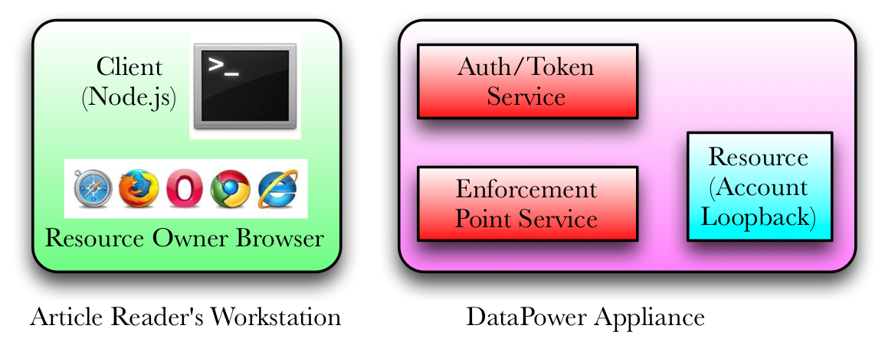

This page is served by a Node.js server playing the role of an OAuth client application. It complements the exercise from the article Implementing OAuth with WebSphere DataPower Appliances, Part 5 as updated Summer 2014. In the figure below, the purple box represents the DataPower services created for the exercise. The green box represents processes in your workstation. The Node.js server simulates an OAuth client and writes status messages to the command line. Your browser plays the role of the resource owner.
This page represents Step 1 shown in Figure 1 of the article and reproduced at the bottom of this page.
Much of the OAuth interaction happens between the OAuth client and the authorization/token server. The activity is best viewed from the Node.js command line.
Figure 1 from Part 5 article